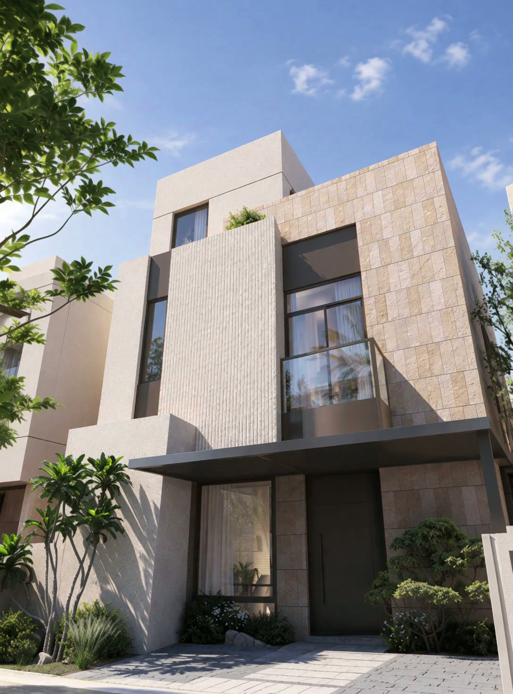

Switch the language and watch what flips. Gestures and lines flip. Pictures do not.
Drag sideways, or use the arrow keys.

The small one on the end is mirrored on purpose, so the check has something to catch.
Detail you can feel
تفاصيل تشعر بها
This page was covered or the screen locked while the checks were running. Videos stop when that happens, so any No below may be about that and not about this phone. Worth running it again without leaving the page.